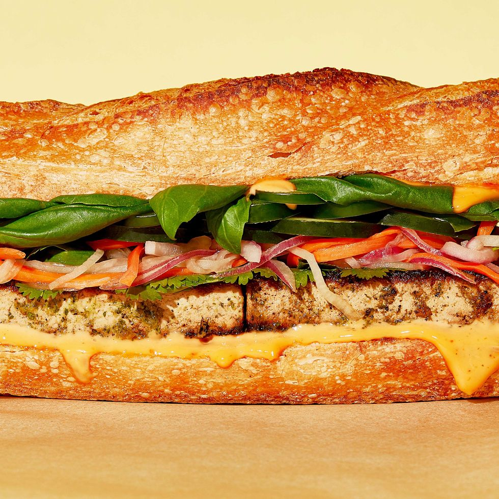

Tofu Bahn Mi

Ingredients
- 1 (14-ounce) block extra-firm tofu, drained/sliced
For Pickled Vegetables
- 1 small carrot, julienned
- 1 small daikon, julienned
- 1/2 small red onion, thinly sliced
- 1 c. unseasoned rice wine vinegar
- 3 tbsp. maple syrup
- 2 tsp. kosher salt
For Spicy Mayo
- 1/4 c. vegan mayo
- 1 tbsp. Sriracha
For Marinade
- 1/2 c. low-sodium soy sauce
- 2 tbsp. sesame oil
- 2 tbsp. maple syrup
- 3 cloves garlic, peeled
- 3-inch piece lemongrass, roughly chopped
- 1/2-inch piece fresh ginger
- 1/2 c. cilantro, roughly chopped
- 3/4 tsp. kosher salt
- 1/2 tsp. freshly ground black pepper
For Sandwiches
- 2 tbsp. olive oil
- 1 baguette, halved lengthwise and cut into 4 equal portions
- 2 c. cilantro, leaves only
- 1 c. basil leaves
- 1 small cucumber, thinly sliced
- 2 jalapeños
Instructions
- Dry the tofu: Line a baking sheet with a clean kitchen towel folded in half. Lay tofu slices in a single layer. Cover with another clean kitchen towel and a baking sheet. Place a heavy pot on top to press out as much liquid as possible.
- Make pickled vegetables: In a medium bowl, combine carrot, daikon, red onion, rice wine vinegar, maple syrup, and salt. Stir until salt is dissolved, then press vegetables down to submerge in pickling liquid as much as possible.
- In a small bowl, combine mayo and Sriracha.
- Make marinade: In a blender or using an immersion blender, blend soy sauce, sesame oil, maple syrup, garlic, lemongrass, ginger, cilantro, salt, and black pepper until smooth.
- Transfer dried tofu to a large plate. Pour marinade over tofu and turn to coat. Set aside two minutes.
- In a large skillet over medium heat, heat oil until shimmering. Gently shake marinade off tofu. (Reserve marinade.) Cook tofu until browned, about 3 minutes per side. The tofu will release from pan when it’s ready, so don’t force it. Transfer tofu back into marinade for at least 10 minutes.
- To assemble: Spread baguettes with spicy mayo. Top with tofu, cilantro, basil, pickled vegetables (shaking off pickling liquid first), cucumber, and jalapeños.